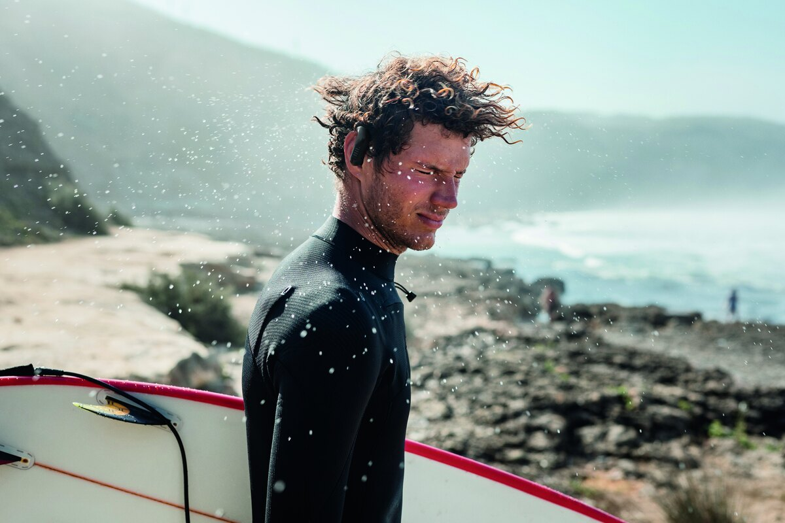
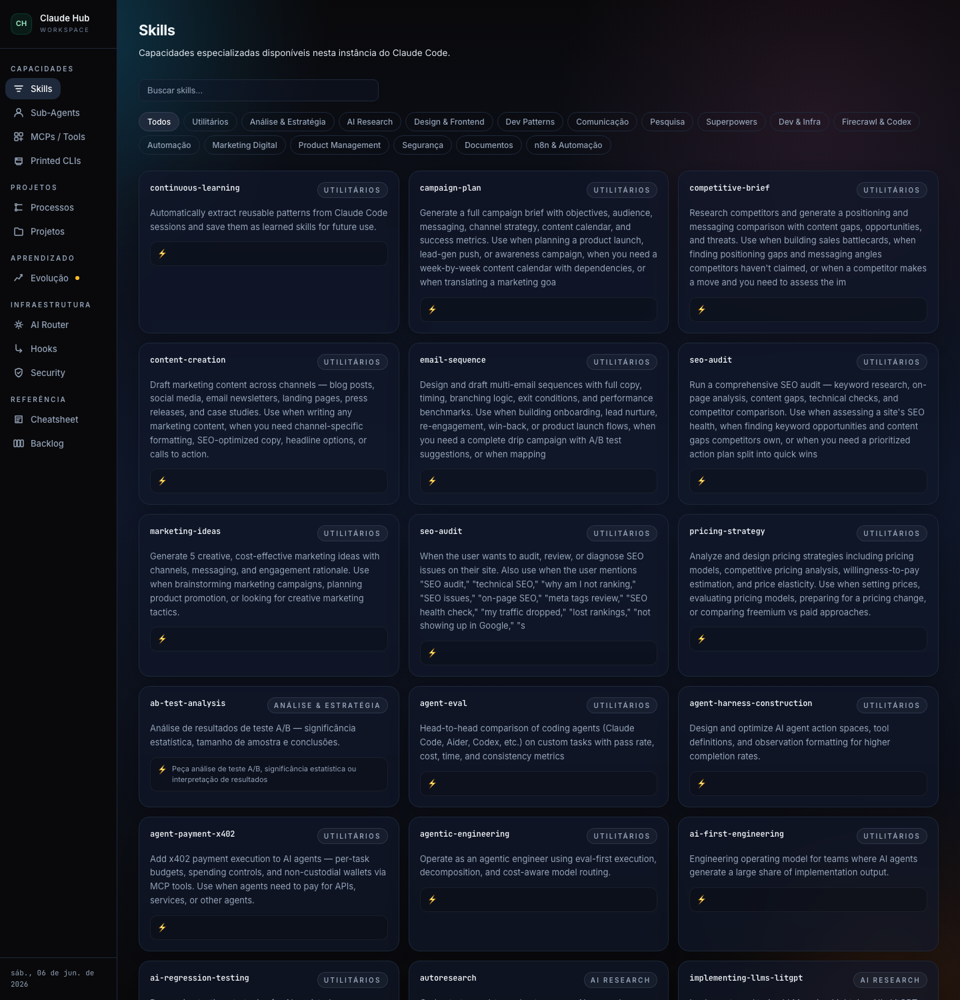
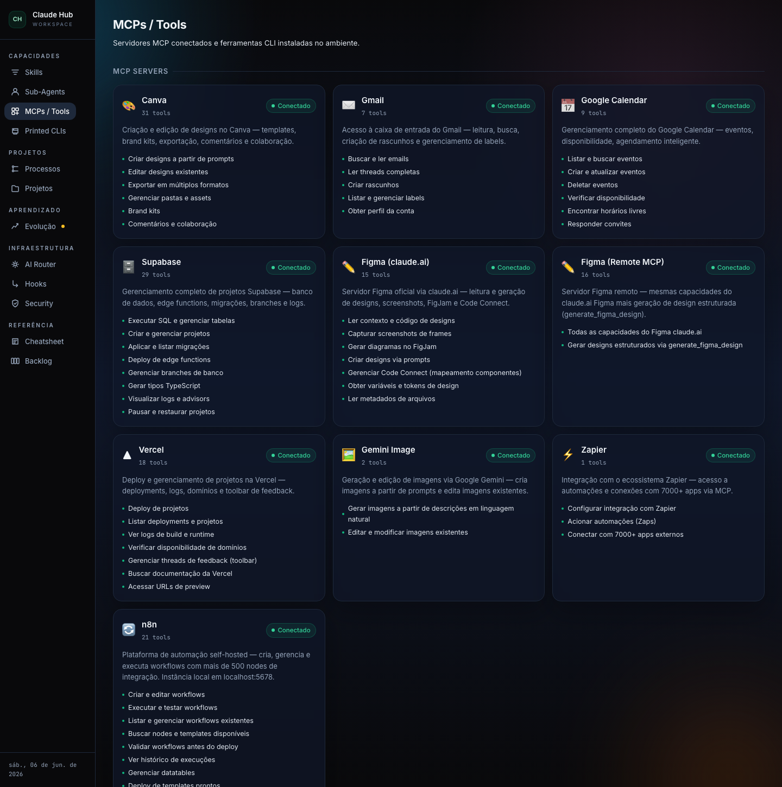
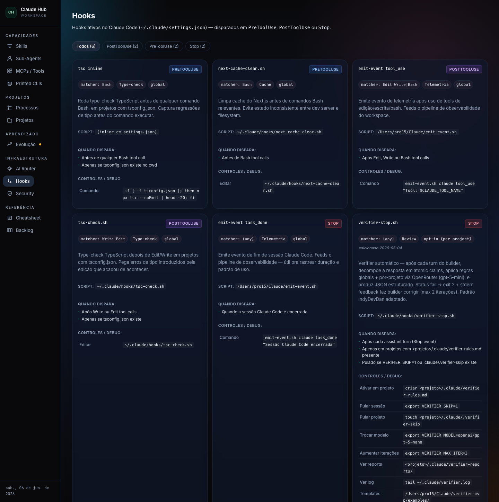
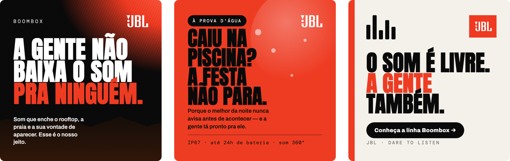
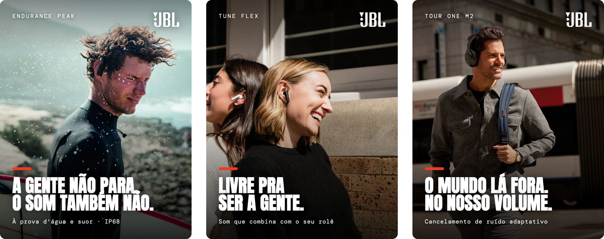

O jeito de trabalhar que leva você ao nível pro. A gente instala tudo ao vivo e aprende as práticas que fazem a diferença. Aula 2: vídeo com Higgsfield.
Dezenas de skills, MCPs e agentes disponíveis. Você não precisa de todos — 20% resolvem 80% do trabalho. É neles que esta aula foca.

Claude + plugins + conectores: o Claude que faz, não só fala.
Ele lembra cliente, voz e estado entre sessões.
/clear · /compact · /rewind — Claude afiado.
Planeja/revisa no Opus, executa no Sonnet. + /review.
Commit constante + hooks e rotinas.
20% das práticas resolvem 80% do trabalho.
Copie os comandos do slide e cole no seu terminal.
Cole o comando do seu sistema. Depois rode claude e faça login com a conta RBA (seat Team).
Windows: use o PowerShell (não o CMD).
document-skills — Word/PPT/PDF/Excel + marca
superpowers — estruturar ideias
firecrawl — pesquisa na web
MCPs ligam o Claude às ferramentas que você já usa — Canva, Gmail, Drive, Figma, Supabase… São habilitados na conta (claude.ai → Settings → Connectors); o admin da RBA já deixou prontos.
Veja os ativos com /mcp. (à direita: o painel real de MCPs.)

Memória · Higiene de sessão · Opus & Sonnet · Versionar & automatizar.
Você não precisa decorar comando com barra. Descreva em português o que precisa — o Claude pesquisa, instala e lembra (entre sessões).
Resultado: você configura conversando. Nem precisa saber qual skill existe nem o comando.
O Claude é parceiro, não máquina de comando. Deixe espaço pra ele avaliar, propor e melhorar o caminho — você decide melhor com a segunda cabeça junto.
Dica: nem sempre termine com ponto final. Termine com pergunta.
/clearRecomeça do zero. Mesa limpa pra próxima tarefa — respostas melhores.
/compactResume a conversa mantendo o foco, sem perder o fio.
/rewindVolta atrás sem perder o que ele já leu. Reinstrui com o que aprendeu.
A atenção do Claude piora quando a conversa incha. Limpe cedo, com direção.
Opus planeja e revisa (raciocínio profundo); Sonnet executa (rápido e capaz).
Você não fica trocando: diga uma vez e salve na memória — vira automático. Errou? /code-review.
Commit constante = rede de segurança. Deu certo? Salve. Deu errado depois? Você volta pro último ponto bom — sem drama.
Mensagens curtas e claras. O Claude pode commitar por você.
Rotinas — agende recorrentes com /schedule ou repita até terminar com /loop.
Hooks — ações automáticas a cada passo (no settings.json). Avançado — exemplos reais ao lado.
💡 Nem precisa mexer no arquivo: descreva a rotina e peça pro Claude configurar. Ex.: "quando eu disser 'vamos encerrar a sessão', atualize a memória do projeto, verifique o git e pergunte se faço push."

As práticas não vivem soltas — elas viram um loop de trabalho.
Tudo dentro do contexto da memória (CLAUDE.md). É esse loop, repetido com disciplina, que te leva ao nível pro.
6 peças da JBL Boombox — type-led + image-led — na voz e identidade reais da marca, saídas do mesmo loop.


Produza uma peça simples de uma marca e passe por todas as etapas. O objetivo não é a peça — é praticar o fluxo.
CLAUDE.md com a voz da marca/code-review e ajuste/clear20% das práticas, 80% do resultado.